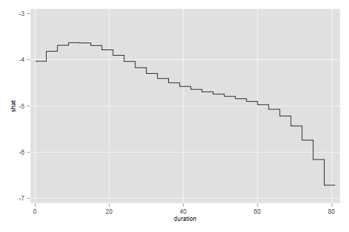
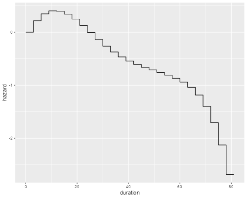

<h2 id="survival-with-a-regression-spline">Survival with a Regression
Spline</h2>
<p>By popular request, here’s an example using a piecewise exponential
model with a regression spline, applied to the recidivism data. The
first thing to do is read the data and create a failure indicator.</p>

{% include srtabs.html %}

<pre class='stata'>. use https://www.stata.com/data/jwooldridge/eacsap/recid.dta, clear

. gen fail = 1 - cens
</pre>
<pre class='r'>> library(haven)
> recid &lt;- read_dta("https://www.stata.com/data/jwooldridge/eacsap/recid.dta")
> recid$fail &lt;- 1 - recid$cens
> nrow(recid)
[1] 1445
</pre>
<p>Next I will split the data every three months, and create a new
variable to reflect exposure (time lived in each interval)</p>
<pre class='stata'>. gen id = _n

. stset durat, fail(fail) id(id)

Survival-time data settings

           ID variable: id
         Failure event: fail!=0 &amp; fail&lt;.
Observed time interval: (durat[_n-1], durat]
     Exit on or before: failure

──────────────────────────────────────────────────────────────────────────
      1,445  total observations
          0  exclusions
──────────────────────────────────────────────────────────────────────────
      1,445  observations remaining, representing
      1,445  subjects
        552  failures in single-failure-per-subject data
     80,013  total analysis time at risk and under observation
                                                At risk from t =         0
                                     Earliest observed entry t =         0
                                          Last observed exit t =        81

. stsplit trimester, at(3(3)78)
(25,750 observations (episodes) created)
</pre>
<pre class='r'>> library(survival)
> recidx &lt;- survSplit(Surv(durat, fail) ~ ., cut=seq(3,78,3), data=recid)
> nrow(recidx)
[1] 27195
> recidx$exposure &lt;- recidx$durat - recidx$tstart
</pre>
<p>To model the baseline hazard I will use a regression spline with
internal knots at 30, 40 and 60 weeks. These are approximately the
quartiles of overall survival as calculated using Kaplan-Meier. To
define the spline I used the mid-point of each interval, 1.5 months
after the start. I then fit a Poisson model with the log of exposure as
an offset</p>
<pre class='stata'>. gen mid = _t0 + 1.5

. bspline, xvar(mid) knots(0 30 40 60 80) p(3) gen(bspl)

. gen expo = _t - _t0

. poisson _d bspl* workprg priors tserved felon drugs black married ///
>     educ age, exposure(expo) nocons

Iteration 0:   log likelihood = -39499.985  
Iteration 1:   log likelihood = -2902.2437  
Iteration 2:   log likelihood = -2828.6165  
Iteration 3:   log likelihood =  -2804.828  
Iteration 4:   log likelihood = -2804.7856  
Iteration 5:   log likelihood = -2804.7856  

Poisson regression                                    Number of obs =   27,195
                                                      Wald chi2(16) = 12472.26
Log likelihood = -2804.7856                           Prob > chi2   =   0.0000

─────────────┬────────────────────────────────────────────────────────────────
          _d │ Coefficient  Std. err.      z    P>|z|     [95% conf. interval]
─────────────┼────────────────────────────────────────────────────────────────
       bspl1 │  -10.76743    3.01364    -3.57   0.000    -16.67406   -4.860806
       bspl2 │  -2.446414   .7114559    -3.44   0.001    -3.840841   -1.051986
       bspl3 │  -4.048105   .3876143   -10.44   0.000    -4.807815   -3.288395
       bspl4 │  -4.701796    .383244   -12.27   0.000    -5.452941   -3.950652
       bspl5 │  -4.827016   .5760656    -8.38   0.000    -5.956084   -3.697948
       bspl6 │  -5.630131   1.271756    -4.43   0.000    -8.122728   -3.137534
       bspl7 │  -13.58216   12.08349    -1.12   0.261    -37.26537    10.10105
     workprg │   .0529768   .0903916     0.59   0.558    -.1241876    .2301411
      priors │   .0949319   .0134198     7.07   0.000     .0686297    .1212342
     tserved │   .0123086   .0016645     7.39   0.000     .0090462    .0155711
       felon │  -.3046545    .104908    -2.90   0.004    -.5102704   -.0990386
       drugs │   .2639392   .0979932     2.69   0.007     .0718761    .4560023
       black │    .393758   .0876149     4.49   0.000     .2220359      .56548
     married │  -.1347573   .1090351    -1.24   0.216    -.3484622    .0789475
        educ │  -.0197291    .019438    -1.01   0.310    -.0578269    .0183686
         age │   -.003322   .0005175    -6.42   0.000    -.0043362   -.0023078
    ln(expo) │          1  (exposure)
─────────────┴────────────────────────────────────────────────────────────────
</pre>
<pre class='r'>> library(splines)
> mf &lt;- fail ~ offset(log(exposure)) +  workprg + priors +  tserved + felon + 
+     drugs + black + married + educ +  age + bs(tstart + 1.5, knots=c(30, 40, 60))
> pwe &lt;- glm(mf, family=poisson, data=recidx)
> coef(summary(pwe))[1:10,]
                Estimate   Std. Error     z value     Pr(>|z|)
(Intercept) -4.032652566 0.3017915359 -13.3623780 1.003077e-40
workprg      0.052976769 0.0903916357   0.5860804 5.578215e-01
priors       0.094931924 0.0134197589   7.0740410 1.504858e-12
tserved      0.012308637 0.0016645485   7.3945799 1.418560e-13
felon       -0.304654512 0.1049079755  -2.9040167 3.684085e-03
drugs        0.263939139 0.0979931661   2.6934443 7.071795e-03
black        0.393757912 0.0876148714   4.4941904 6.983513e-06
married     -0.134757315 0.1090350844  -1.2359078 2.164928e-01
educ        -0.019729166 0.0194379965  -1.0149794 3.101156e-01
age         -0.003321962 0.0005174536  -6.4198264 1.364298e-10
</pre>
<p>You may want to check that the coefficients for our predictors are
very similar to those obtained using a Cox model. As for the shape of
the hazard, we can predict using the spline coefficients.</p>
<pre class='stata'>. preserve // for safety

. egen tag = tag(mid)

. keep if tag // one obs per interval
(27,168 observations deleted)

. gen shat = 0

. forvalues i=1/7 {
  2.     quietly replace shat = shat + bspl`i' * _b[bspl`i']
  3. }    

. expand 2
(27 observations created)

. gen first = _n &lt;= 27

. replace mid = mid - 1.5 if first
(27 real changes made)

. replace mid = mid + 1.5 if !first
(27 real changes made)

. sort mid first    

. line shat mid, xtitle(duration)

. graph export pweSpline.png, width(500) replace
file pweSpline.png saved as PNG format
</pre>
<pre class='r'>> library(ggplot2)
> m &lt;- seq(1.5, 79.5, 3)
> y &lt;- bs(m, knots=c(30,40,60)) %*% coef(pwe)[11:16]
> xy &lt;- data.frame( duration = sort(c(m-1.5, m+1.5)), hazard = rep(y, rep(2,length(y))))
> ggplot(xy, aes(duration, hazard)) + geom_line()
> ggsave("pweSpliner.png", width=500/72, height=400/72, dpi=72)
</pre>
<p> </p>
<p>Showing once agan that the hazard appears to rise initially and then
decline steadily, so a log-normal is not a bad fit. Note that plotting
the spline would be a bit misleading, as we really didn’t fit a curve,
but rather a piecewise constant hazard where the value in each
three-month interval is taken from the curve. The graph above takes this
into account.</p>
